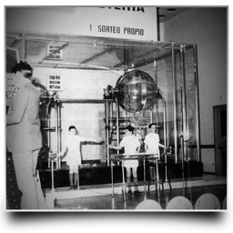
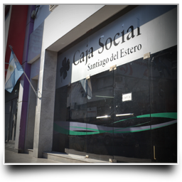

Nuestra Historia
1941
Nuestra historia comienza con la creación de la Caja de Ahorro y Previsión Social el 3 de octubre de 1941. El presidente designado,celebra el primer sorteo de Lotería Santiagueña coincidiendo con los que se realizaba en la Lotería de Beneficencia de la Nación.
1971
El 28 de junio de 1971 se crea la Caja Popular de Ahorro y Crédito de la provincia a la que se transfiere el personal y patrimonio proveniente de la Caja de Ahorro y Previsión Social. La nueva entidad inicia en esta fecha la comercialización de la denominada Tómbola Santiagueña (juego de quiniela).
1983
En la presidencia del Sr. Carrasco se realiza el primer sorteo de Lotería Santiagueña con equipos propios, en su emisión N° 5.561, el 24 de septiembre de 1983.
1996
Por iniciativa del ex gobernador de la provincia Dr.Juárez se modifica la denominación de nuestro organismo. Desde ese entonces se intitula Caja Social de Santiago del Estero.
1999
En la presidencia del CPN.Cuba se inaugura el Salón de Sorteos Propio con Equipos Sorteadores Electrónicos de última generación únicos en el país. Estos importantes adelantos dieron seguridad y transparencia a los sorteos, lo que es comprobado en virtud que tanto Lotería Nacional, como las Loterías de la Provincias de Córdoba, Santa Fe y Provincia de Buenos Aires, tomaron desde entonces los resultados de nuestros sorteos de Lotería Santiagueña para sus apuestas de Quinielas.
2014
La Lotería Santiagueña es comercializada en varias provincias de nuestro país, además de todo nuestro territorio provincial. Tiene gran aceptación del público ya que es una de la más accesibles por su precio,con premios garantizados por el Estado provincial, lo que da una seguridad del 100 por ciento el pago de los mismos. Los sorteos se realizan todos los días viernes bajo la supervisión de Escribano Público asimismo cabe señalar que además de sus sorteos ordinarios se realizan anualmente dos sorteos extraordinarios, uno en Fin de Año y, otro en el mes de Julio en conmemoración del aniversario de la Ciudad de Santiago del Estero.
HOY
Actualmente, las oficinas de la Caja Social y el moderno Salón de Sorteos, se encuentran ubicados en el nuevo Complejo Juan Felipe Ibarra. Cabe señalar que desde sus comienzos las utilidades que arroja la comercialización de la Lotería Santiagueña son destinadas a obras de acción social, de allí nuestro lema: "Caja Social ayuda a ganar y gana para ayudar". En forma conjunta y mancomunada con las loterías del país, trabaja para crear conciencia en el público apostador en relación al juego responsable, en pos de prevenir y disminuir los peligros del juego inmoderado.